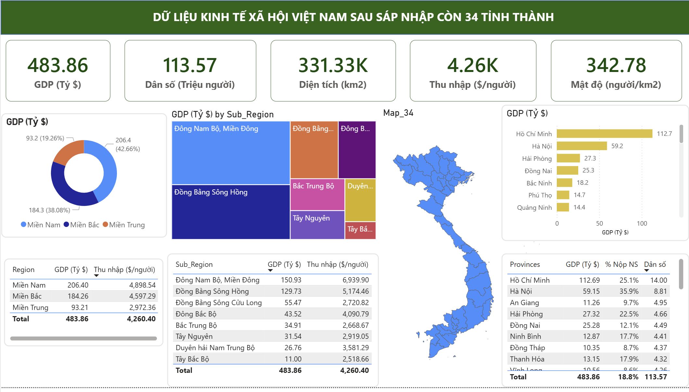

The Context & Goal
This project simulates a macroeconomic analysis of Vietnam under a hypothetical administrative restructuring (merging 63 provinces into 34). The goal was to consolidate massive demographic and financial datasets, calculate new regional key performance indicators (KPIs), and build an interactive Power BI dashboard to evaluate the economic disparities across the newly formed regions.

01. Data Processing & Aggregation
Robust data preparation is the backbone of accurate economic analysis.
- Data Consolidation: Extracted and merged datasets containing Area (km2), Population, GRDP 2024, State Budget Revenue, and Per Capita Income for the proposed 34 provinces.
- Data Transformation: Cleaned formatting inconsistencies and established precise formulas to derive secondary metrics like population density and regional GDP contributions.
- Structuring for BI: Formatted the flat data into a relational structure suitable for Power BI's Data Model, ensuring smooth slicing and dicing by region and sub-region.
Focus: ETL Process, Data Cleaning, Derived Metrics.

02. Macroeconomic Insights & Visualization
The interactive dashboard translates millions of data points into a clear, strategic overview of the nation's economic health.
- High-Level KPIs: Instantly tracks national totals: $483.86B GDP, 113.57M Population, and an average income of $4.26K/person.
- Regional Disparity Analysis: The Donut chart and Treemap clearly illustrate that the Southern region (Miền Nam) and Southeast (Đông Nam Bộ) are the primary economic engines, contributing nearly 42.7% to the national GDP.
- Geospatial & Top Performers: Integrated an interactive map of the 34 provinces alongside a bar chart highlighting Ho Chi Minh City ($112.7B) and Hanoi ($59.2B) as the dominant economic hubs.
Visuals: Treemaps, Geospatial Map, Dynamic Matrix.